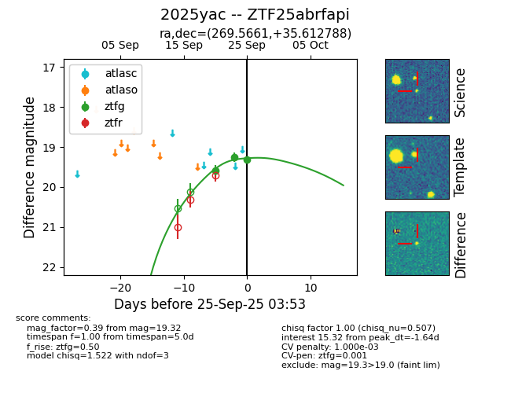
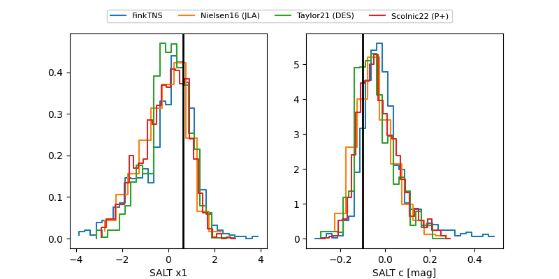

FINK: ZTF25abrfapi
Lasair: ZTF25abrfapi
ALeRCE: ZTF25abrfapi
TNS: 2025yac
YSE: 2025yac
ZTF25abrfapi (ztf,fink)
2025yac (tns,yse)
equatorial (ra, dec) = (269.5661,+35.61279)
galactic (l, b) = (61.6232,+25.58748)


last ztfg=19.32
3 ztfg detections